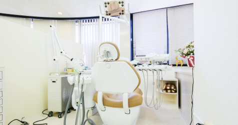
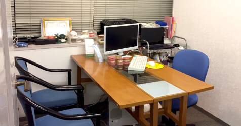

遅くありません。
今からでも
歯列矯正
大人になってからの

大人向けの矯正歯科「グリーン矯正歯科」

Point
01

矯正専門歯科として創業20年。
積み上げられた技術と経験で
「最短最適な治療」をご提案します。

「大人になってからの矯正、
今からでも遅くありませんか？」
多くの患者様から質問されることの一つですが結論から申し上げると、もちろん遅くありません。当院では60歳を超えてから矯正治療に取り組まれた方もいらっしゃいます。「歯並びを直したい！」と思った時が若ければ若いほど、その後の人生においてキレイな歯並びの恩恵を受け続けることができます。


矯正というと子供がするものだという認識があるかと思います。それは成長期に矯正することで骨が動きやすく、まだ骨格が完成されていないことから、多くの矯正歯科さんではそのように勧められています。一方、大人になってからの矯正というのは骨格が完成されていますから、子供のときに比べれば"歯が動きにくい"というのは事実ですが、”もう動かない”というわけでは決してありません。
大人の矯正治療の場合、八重歯を治したい、出っ歯を治したい、抜歯をしたくない、目立たないように治療したい…など患者様ごとに違った"悩み"をお持ちです。また、患者様ごとに違った"骨格"があるという大前提も考慮しなければなりません。ですから、同じ治療というのは一つも無いのです。つまりそれは、患者様に最適な治療プランをオーダーメイドで提案するということです。ですから豊富な技術と経験が、治療期間や治療後の歯並びに影響することは言うまでもない事実です。グリーン矯正歯科では20年という歴史を通して、「最短最適な治療」をご提供できるよう日々努めています。
あなたの治療が１日でも早く終わるように、初診カウンセリングの時間を十分に設けています。あなたの歯並びに関するお悩みを思い残すことなくご相談ください。一時の治療で一生分の笑顔を手に入れていただくことで、歯並びだけではなく、性格まで明るくなる方がいらっしゃることは、当院にとって本望であり、最高の喜びです。
Point
02
写真写りが気になる…
キレイな歯並びと、"白さ”も気にされる方が
増えています。

もう自撮り写真や、SNSで共有されても
不安を感じる必要はありません。
スマートフォンの普及により、写真を撮る機会、SNSへ投稿する機会が増えていらっしゃるのではないでしょうか。 歯並びのキレイな友人と並んで写真を撮りたくない、口を閉じずおもいっきり笑って写真を撮りたい。そのようなお悩みをいただくことがすごく増えています。当院は矯正治療だけではなく、ホワイトニングを受けることもできますので、キレイな歯並びだけではなく”白い歯"も合わせてご提供することが可能です。初診カウンセリング時にあなたのお悩みを遠慮なくご相談ください。
Point
03
すぐに治療を開始したい方には
「デンタルローン」 をご利用ください。
「一日でも早く治療開始したい
そんなあなたのために
当院では保険外診療における治療費を分割払いでご利用いただけるデンタルローンをご用意しております。
数年単位で取り組む矯正治療ですから、１日でも早く開始したいという方のために有効にご活用いただいております。
あなたの治療計画に合わせたお支払いプランをお選びいただけます。また、医療費控除も受けることが可能です。初回の初診カウンセリングの際にお気軽にご相談ください。
Point
04
夜20時まで開いているから、
お仕事帰りの通院にも便利です
忙しくて通院したくてもできない
そんなあなたのために
定休日である月曜日を除いて、平日の火曜日〜金曜日は20時まで診療しています。20時まで診療している矯正歯科さんというのは一宮駅周辺では比較的少ないため、お仕事帰りの平日に通院されたい方に大変喜ばれております。駅前ですから通院が終わり次第、食事やジムなどに行かれる際も非常に便利です。
お車でお越しの方は、市営地下駐車場をご利用ください。駐車券をお渡ししておりますので、駅前だからといって有料駐車場をご利用頂く必要はございません。
Point
05
歯科にとってコスト負担の重い
「院内感染対策」も"徹底"しています
院内感染のリスクを排除し、
安心して通っていただけます
グリーン矯正歯科では患者様に安心して衛生的な矯正治療を行っていただくために、人数分の器具を用意するなどして、徹底した院内感染対策を心がけています。
新しくてキレイな施設やカバーできるスタッフの人数も重要ですが、それ以上に患者様にとって必要なことは、「院内感染のリスクを排除し、安心して通っていただけること」が何よりも重要であり、最優先事項であると考えています。
院内感染とは来院された患者様がかかられている感染症の病気が、器具や設備を通じて他の患者様に移ってしまうことを言います。この感染症の中には、B型肝炎、C型肝炎などの危険な感染症の他、HIV（エイズ）のような重病も含まれています。 ご存知無い方も多いかと思いますが、そのような院内感染対策について、国の保険で負担してもらうことは認められていません。そのため、どこまで院内感染対策に対しコストを掛けて対策するかは、それぞれの歯科に任されているのが現状です。
大人矯正の種類

職業や生活、金銭事情などに合わせて、
様々なご要望に対応しています
全く目立たないように治療したい

リンガルブラケット
「舌側矯正」とも言われる「リンガルブラケット矯正」です。上下ともに歯の裏側に矯正装置を装着するので、見た目には矯正をしていることが全くわかりません。多くの人に会うようなお仕事をされている方に人気で
出来るだけ短期間で治療したい
デーモン3
装置の摩擦抵抗が極限まで少なくなった「デーモン３」と言われる技術で、短時間でより良い治療結果を得ることができます。通院回数が少なくて済みますので、仕事や家事で忙しい方に向いています。
ワイヤーを付けずに治療したい

インビザライン
「インビザライン」というマウスピースタイプの治療です。見た目を気にする女性に人気です。食事の時だけ取り外しが出来るなど、歯磨きも普通にできるので衛生的です。金属アレルギーの心配もありません。
リーズナブルに治療したい
レギュラー
費用を抑えて治療したい方には「レギュラー」タイプがオススメです。矯正装置としてもっとも一般的なもので、一本一本の歯に接着剤で装着します。
院長紹介
医療法人 グリーンフォレスト 理事長
グリーン矯正歯科院長
大道 貞祥 OMICHI SADAYOSHI
1986 岐阜歯科大学卒業
1990 朝日大学歯学部大学院卒業
1990～ 朝日大学歯学部矯正学講座講師
1997 グリーン矯正歯科（一宮）開業
日本矯正歯科学会指導医・認定医
JADR・IADR 会員
日本顎関節学会会員

クリニック紹介
クリニック外観

クリニックのあるビルの外観です。
駅前徒歩３分にありますので、アクセスは抜群です。
診療室

広く開放感のある空間となっています。
大きな窓もありますので、歯医者さんの閉ざされた空間というイメージもかわったのではありませんか？
カウンセリング室
料金の説明や治療のプラン、お口の状態などについて、詳しくご説明いたします。少しでも不安や疑問におもったら、遠慮なくご質問下さいね。
受 付

こちらが受付となります。
こちらで診察券の提示、次回ご予約日の調整などを行います。
YouTubeでもご覧になれます。
アクセス
完全予約制 | 平日最終受け付け時間 18:30
| 平日 | 10:00～13:00 / 15:00～20:00 | ||
| 土曜日 | 10:00～12:00 / 14:00～18:30 | ||
| 休 診 日 |
|
※診療日は月により変動します。
グリーン矯正歯科（一宮）
愛知県一宮市栄1-11-16 マースビル3F
TEL 0586-26-1771 E-mail green-i.dc@dentalman.jp
JR尾張一宮駅・名鉄新一宮駅から徒歩３分
※駐車場につきましては市営地下駐車場をご利用下さい。
駐車券をお渡しします。
初診カウンセリングのご予約を。
歯並びの悩み、その日に解消します。
治療期間、費用、仕事と並行して続けられるのか？何かと不安がつきまとう矯正治療。そんな方は、まずは初診カウンセリングを受けに来てください。個人的なお悩みをお聞きしますから、プライベートが守られた個室で行っていきます。
実際にお口の中を拝見し、歯並びや噛み合わせ、顎の状態などを診察していき総合的な治療方針を相談しながら決めていきます。現在の状態をご理解いただいてから、矯正装置の種類や期間などをご説明させていただきます。
十分に納得いくまで話し合いを進めてから、実際の治療に入っていきます。自分ひとりで矯正について調べるだけでは専門的な観点が必要で限界があります。カウンセリングを受けていただくのが一番の判断材料になりますので、まずは初診カウンセリングをご予約ください。